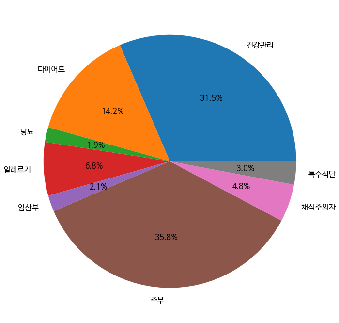

조사 자료&결론

우선 각 소비집단을 나누는 기준이 되었던 '키워드'에 대해 설명 드리겠습니다. 댓글을 개괄적으로 살펴 본 결과, 저희는 총 10부류의 소비자가 있다고 가정하였습니다. 건강관리를 위해 비건 식품을 찾는 사람, 다이어트를 위해, 당뇨 관리를 위해, 알레르기 때문에, 임산부여서, 주부가 가족의 요리를 위해, 채식주의자여서, 특수 식단을 요구하는 다이어트 때문에, 스님이어서, 반려동물을 위해서 등이었습니다. 그리고 각 집단의 구매성향을 잘 반영하는 댓글 상의 명사를 추출하여 키워드로 리스트 했습니다. 키워드를 사용한 이유는 비건 식품에는 어떤 소비자가 있고, 무슨 동기로 제품을 구매하며, 각 대체육/식물성 단백질 음료/…에서 어떤 소비자가 어느 정도의 비중을 차지하고, 전체 비건 식품에서는 어떤 소비자가 어느 정도의 비중으로 찾아보는지 알기 위해서입니다.
우선 총 비건 식품에서 각 소비자군이 얼만큼의 파이를 차지하는지 보겠습니다. 비건 제품을 구매하는 소비자 중에서, 두 집단이 가장 큰 비율을 차지하였는데 ‘주부’, ‘건강관리’의 키워드를 가진 집단 순이었습니다. ‘주부’ 집단은 35.8%로 영양간식, 아이들 간식, 부모님, 남편 등 가족들의 건강과 관련된 키워드를 사용한 소비자군이었습니다. ‘건강관리’ 집단은 31.5%로 소화, 입원, 건강식품, 무첨가, 기저질환 등의 키워드를 사용한, 건강을 위해 섭취하는 음식에 많은 신경을 쓰는 소비자군이었습니다. 그 다음은 ‘다이어트’ 집단이 14.2%, ‘알레르기’ 집단이 6.8%, ‘채식주의자’ 집단이 4.8%으로 나타났습니다. 이를 통해 실제로 채식주의자이기 때문에 비건 제품을 소비하는 집단은 전체의 약 5% 정도이며 주 소비 집단은 가족과 자신의 건강을 신경쓰려고 하는 집단이 전체의 약 70%인 것을 알 수 있습니다. 또한 다이어트를 목적으로 일반 음식의 대체품으로 비건 제품을 이용할 것이라는 예측도 일부 베이커리 제품에서는 사실로 드러났으나 전체적으로는 14%에 불과하다는 것을 확인할 수 있습니다.
다음은 제품군별로 소비자군을 알아보겠습니다.
모든 제품군에서 파이 차트에서 볼 수 있었듯, ‘주부’, ‘건강관리’ 집단이 가장 큰 비율을 차지했으며 비건 베이커리에서만 특별히 ‘건강관리’ 집단이 ‘주부’ 집단을 추월하였습니다. 식물성 음료 식품의 경우, ‘주부’ 집단과 ‘건강관리’ 집단이 비슷하게 나타났습니다. 또한 ‘임산부’ 집단의 키워드가 가장 많이 나온 제품군이었습니다. ‘알레르기’ 집단의 경우, 비육류 대체식품, 비건베이커리에서 높게 나오고 식물성 음료 식품과 대체 육류 식품에서 낮게 나오는 것을 확인할 수 있습니다. 비육류 대체 식품의 경우, 가장 다양성이 높았던 제품군으로 알레르기, 채식주의자, 특수식단 소비자군이 타 제품군에 비해 눈에 띄게 비중이 늘어난 것을 볼 수 있습니다. 임산부 집단의 경우 식물성 음료 식품에서, 반려동물은 대체 육류 식품에서 가장 두드러지게 그 존재를 확인할 수 있습니다.
시사점
이상의 결과를 살펴보면 조사대상이 된 비건 식품에서 채식주의자로 정체화한 소비자군은 전체 소비자군 중 하위 4등을 차지했으며, 오히려 주부나 건강관리, 다이어트의 목적을 가진 소비자가 큰 구매력을 행사한다는 것을 알 수 있습니다. 이는 초기의 가설이었던 '비건 식품 시장은 철저한 채식주의자들만이 참여하는 시장이 아니고, 다양한 소비자가 참여하고 또 그러한 다양성을 겨냥한 제품이 공급되는 시장임'을 뒷받침하는 자료라고 생각됩니다. 나아가서 ‘비건’이 하나의 트랜드가 되었음을 이해할 수 있습니다. 비건이 트랜드가 되고, 하나의 라이프스타일이 되면서 비건 소비는 건강을 위해서, 동물 보호를 위해서, 단순한 호기심 때문에, 트랜드를 쫓는 일반 소비자들이 유입되었습니다. 비건 식은 ‘소수’의, 소위 ‘까다롭고 유난스러운 사람들이 먹는 음식’이라는 이미지를 벗어날 수 있었습니다. 이러한 가치의 상승과 기업의 상호적인 노력을 통해 비건 시장 규모는 앞으로도 계속 확장될 것입니다.